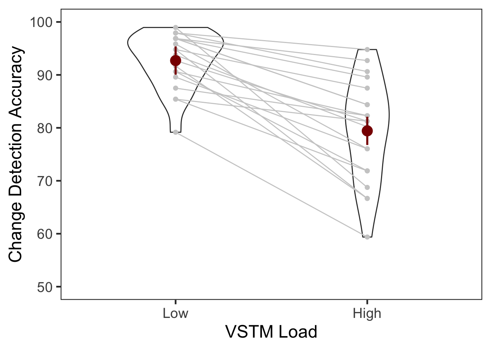
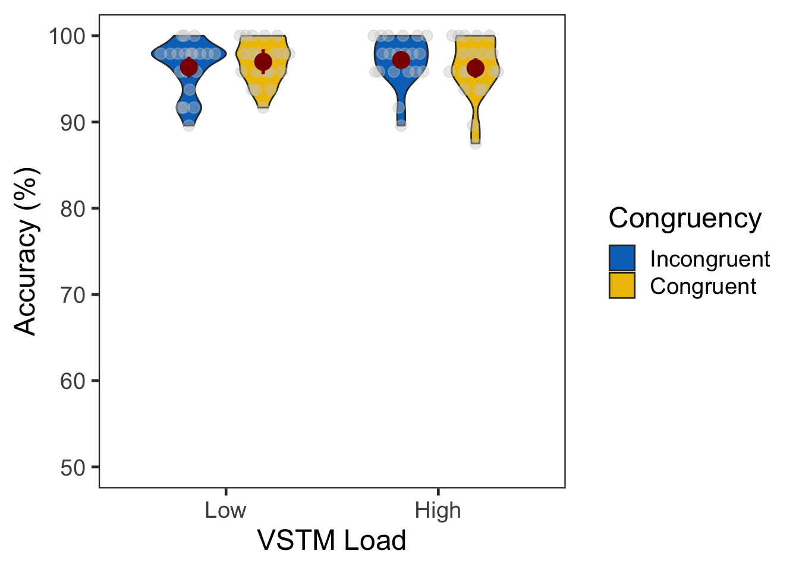
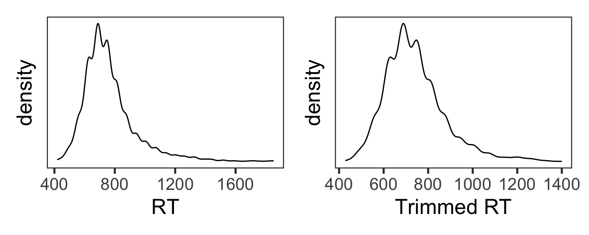
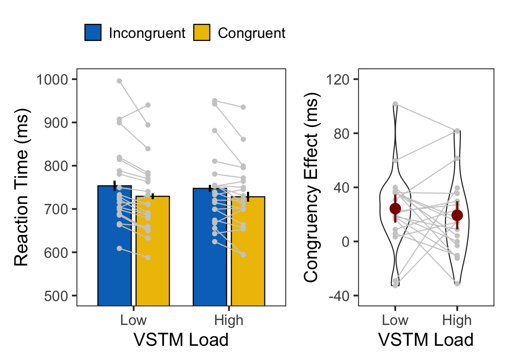

set.seed(12345) # for reproducibility
# Some packages need to be loaded. We use `pacman` as a package manager, which takes care of the other packages.
if (!require("pacman", quietly = TRUE)) install.packages("pacman")
if (!require("Rmisc", quietly = TRUE)) install.packages("Rmisc") # Never load it directly.
pacman::p_load(tidyverse, knitr,
powerAnalysis, afex, emmeans, BayesFactor,
ggstatsplot)
pacman::p_load_gh("thomasp85/patchwork", "RLesur/klippy")
options(knitr.kable.NA = '')
klippy::klippy()A short version of task description here.
E1 <- read.csv("data/data_vstmAS1.csv", header = T)
E1$SN <- factor(E1$SN)
E1$vstmLoad <- factor(E1$vstmLoad, levels=c(1,2), labels=c("LowLoad","HighLoad"))
E1$Congruency <- factor(E1$Congruency, levels=c(0,1), labels=c("Incongruent","Congruent"))
E1$Corr <- ifelse(E1$Targ==E1$Resp,1,0)
E1$vstmCorr <- ifelse(E1$vstmCond==E1$vstmResp,1,0)
# Description of raw data columns.
# 1. SN: participant ID
# 2. Trial: 1~192
# 3. vstmLoad: VSTM load. 1 = low, 2 = high
# 4. Targ: target type. 1 or 2
# 5. Flnk: flanker type. 1 or 2
# 6. Congruency: 0 = incongruent, 1 = congruent
# 7. Resp: 1 or 2, 7 = no response
# 8. RT: response time in second
# 9. vstmCond: change = 1 or not = 2
# 10. vstmResp: 1 or 2, 7 = no response
# 11. vstmRT: response time in second
# 12. Corr: attention task correctness, 1=correct, 0 = incorrect
# 13. vstmCorr: VSTM task correctness, 1=correct, 0 = incorrect
glimpse(E1, width=70)
## Rows: 3,840
## Columns: 13
## $ SN <fct> 1, 1, 1, 1, 1, 1, 1, 1, 1, 1, 1, 1, 1, 1, 1, 1, …
## $ Trial <int> 1, 2, 3, 4, 5, 6, 7, 8, 9, 10, 11, 12, 13, 14, 1…
## $ vstmLoad <fct> LowLoad, HighLoad, LowLoad, LowLoad, LowLoad, Hi…
## $ Targ <int> 1, 1, 2, 1, 1, 2, 1, 1, 1, 1, 2, 1, 2, 2, 2, 2, …
## $ Flnk <int> 1, 2, 1, 2, 1, 1, 2, 2, 1, 1, 2, 2, 1, 2, 1, 2, …
## $ Congruency <fct> Congruent, Incongruent, Incongruent, Incongruent…
## $ Resp <int> 1, 1, 2, 1, 1, 7, 1, 1, 1, 1, 7, 1, 2, 2, 2, 2, …
## $ RT <dbl> 1.1466, 1.3619, 0.8450, 1.2057, 1.0779, 7.0000, …
## $ vstmCond <int> 2, 1, 1, 2, 2, 2, 1, 1, 2, 2, 1, 2, 1, 2, 1, 1, …
## $ vstmResp <int> 2, 2, 1, 2, 2, 1, 1, 1, 2, 2, 1, 1, 1, 2, 1, 1, …
## $ vstmRT <dbl> 1.1304, 1.2176, 0.7007, 0.6774, 0.6777, 1.2781, …
## $ Corr <dbl> 1, 1, 1, 1, 1, 0, 1, 1, 1, 1, 0, 1, 1, 1, 1, 1, …
## $ vstmCorr <dbl> 1, 0, 1, 1, 1, 0, 1, 1, 1, 1, 1, 0, 1, 1, 1, 1, …Both VSTM Load and Congruency were within-subject factors.
| 1 | 2 | 3 | 4 | 5 | 6 | 7 | 8 | 9 | 10 | 11 | 12 | 13 | 14 | 15 | 16 | 17 | 18 | 19 | 20 | |
|---|---|---|---|---|---|---|---|---|---|---|---|---|---|---|---|---|---|---|---|---|
| LowLoad | 96 | 96 | 96 | 96 | 96 | 96 | 96 | 96 | 96 | 96 | 96 | 96 | 96 | 96 | 96 | 96 | 96 | 96 | 96 | 96 |
| HighLoad | 96 | 96 | 96 | 96 | 96 | 96 | 96 | 96 | 96 | 96 | 96 | 96 | 96 | 96 | 96 | 96 | 96 | 96 | 96 | 96 |
| 1 | 2 | 3 | 4 | 5 | 6 | 7 | 8 | 9 | 10 | 11 | 12 | 13 | 14 | 15 | 16 | 17 | 18 | 19 | 20 | |
|---|---|---|---|---|---|---|---|---|---|---|---|---|---|---|---|---|---|---|---|---|
| Incongruent | 96 | 96 | 96 | 96 | 96 | 96 | 96 | 96 | 96 | 96 | 96 | 96 | 96 | 96 | 96 | 96 | 96 | 96 | 96 | 96 |
| Congruent | 96 | 96 | 96 | 96 | 96 | 96 | 96 | 96 | 96 | 96 | 96 | 96 | 96 | 96 | 96 | 96 | 96 | 96 | 96 | 96 |
# VSTM, Experiment 1, subject-level, long format
vE1slong <- E1 %>% group_by(SN, vstmLoad) %>%
summarise(vstmCorr = mean(vstmCorr)*100) %>%
ungroup()## `summarise()` regrouping output by 'SN' (override with `.groups` argument)# Experiment 1 summary
vE1slong %>% group_by(vstmLoad) %>%
summarise(M = mean(vstmCorr), SD = sd(vstmCorr)) %>%
ungroup() %>%
kable()## `summarise()` ungrouping output (override with `.groups` argument)| vstmLoad | M | SD |
|---|---|---|
| LowLoad | 92.70833 | 5.224755 |
| HighLoad | 79.42708 | 9.617805 |
# wide format, needed for geom_segments.
vE1swide <- vE1slong %>% spread(key = "vstmLoad", value = "vstmCorr")
# group level, needed for printing & geom_pointrange
# Rmisc must be called indirectly due to incompatibility between plyr and dplyr.
vE1g <- Rmisc::summarySEwithin(data = vE1slong, measurevar = "vstmCorr",
withinvars = "vstmLoad", idvar = "SN")
ggplot(vE1slong, aes(x=vstmLoad, y=vstmCorr)) +
geom_violin(width = 0.5, trim=TRUE) +
geom_point(color="gray80", size=1.8) +
geom_segment(data=vE1swide, aes(x=1, y=vE1swide$LowLoad,
xend=2, yend=vE1swide$HighLoad), color="gray80") +
geom_pointrange(vE1g, inherit.aes=FALSE,
mapping=aes(x = vstmLoad, y=vstmCorr,
ymin = vstmCorr - ci, ymax = vstmCorr + ci),
colour="darkred", size = 1) +
labs(x = "VSTM Load", y = "Change Detection Accuracy") +
scale_x_discrete(labels=c("LowLoad" = "Low", "HighLoad" = "High")) +
coord_cartesian(ylim = c(50, 100), clip = "on") +
theme_bw(base_size = 18) +
theme(panel.grid.major = element_blank(),
panel.grid.minor = element_blank())## Warning: Use of `vE1swide$LowLoad` is discouraged. Use `LowLoad` instead.## Warning: Use of `vE1swide$HighLoad` is discouraged. Use `HighLoad` instead.
A t-test. Effect size followed.
##
## Paired t-test
##
## data: vstmCorr by vstmLoad
## t = 7.3815, df = 19, p-value = 5.421e-07
## alternative hypothesis: true difference in means is not equal to 0
## 95 percent confidence interval:
## 9.515341 17.047159
## sample estimates:
## mean of the differences
## 13.28125##
## effect size (Cohen's d) of paired two-sample t test
##
## d = 1.693427
## alternative = two.sided
##
## NOTE: The alternative hypothesis is md != 0
## small effect size: d = 0.2
## medium effect size: d = 0.5
## large effect size: d = 0.8Accuracy in the attention task was generally high. There were no significant effects in the ANOVA.
# Attention, Experiment 1, subject-level, long format
aE1slong <- E1 %>% group_by(SN, vstmLoad, Congruency) %>%
summarise(Accuracy = mean(Corr)*100) %>%
ungroup()## `summarise()` regrouping output by 'SN', 'vstmLoad' (override with `.groups` argument)# Experiment 1 summary
aE1slong %>% group_by(vstmLoad, Congruency) %>%
summarise(M = mean(Accuracy), SD = sd(Accuracy)) %>%
ungroup() %>%
kable()## `summarise()` regrouping output by 'vstmLoad' (override with `.groups` argument)| vstmLoad | Congruency | M | SD |
|---|---|---|---|
| LowLoad | Incongruent | 96.35417 | 3.088234 |
| LowLoad | Congruent | 96.97917 | 2.481198 |
| HighLoad | Incongruent | 97.18750 | 2.809351 |
| HighLoad | Congruent | 96.25000 | 3.419928 |
# group level, needed for printing & geom_pointrange
# Rmisc must be called indirectly due to incompatibility between plyr and dplyr.
aE1g <- Rmisc::summarySEwithin(data = aE1slong, measurevar = "Accuracy",
withinvars = c("vstmLoad", "Congruency"), idvar = "SN")
ggplot(data=aE1slong, aes(x=vstmLoad, y=Accuracy, fill=Congruency)) +
geom_violin(width = 0.7, trim=TRUE) +
ggbeeswarm::geom_quasirandom(dodge.width = 0.7, color = "gray80", size = 3, alpha = 0.4,
show.legend = FALSE) +
geom_pointrange(data=aE1g,
aes(x = vstmLoad, ymin = Accuracy-ci, ymax = Accuracy+ci, color = Congruency),
position = position_dodge(0.7), color = "darkred", size = 1, show.legend = FALSE) +
coord_cartesian(ylim = c(50, 100), clip = "on") +
labs(x = "VSTM Load",
y = "Accuracy (%)",
fill="Congruency") +
scale_x_discrete(labels=c("LowLoad" = "Low", "HighLoad" = "High")) +
scale_fill_manual(values=c('#0073C2FF','#EFC000FF'),
labels=c("Incongruent", "Congruent")) +
theme_bw(base_size = 18) +
theme(panel.grid.major = element_blank(),
panel.grid.minor = element_blank()) 
aov_ez(id = "SN", data = aE1slong, dv = "Accuracy",
within = c("vstmLoad", "Congruency")) %>%
anova(es = "pes") %>% kable(digits = 4)| num Df | den Df | MSE | F | pes | Pr(>F) | |
|---|---|---|---|---|---|---|
| vstmLoad | 1 | 19 | 5.1941 | 0.0104 | 0.0005 | 0.9197 |
| Congruency | 1 | 19 | 8.5977 | 0.0568 | 0.0030 | 0.8142 |
| vstmLoad:Congruency | 1 | 19 | 5.9251 | 2.0602 | 0.0978 | 0.1674 |
# filtering out incorrect trials
cE1 <- E1 %>% filter(Corr==1 & vstmCorr==1) %>% mutate(RT = RT*1000)
# trimming by 2.5 MAD.
rE1 <- cE1 %>% filter(RT > 200) %>%
group_by(SN) %>%
nest() %>%
mutate(lbound = map(data, ~median(.$RT)-2.5*mad(.$RT)),
ubound = map(data, ~median(.$RT)+2.5*mad(.$RT))) %>%
unnest(lbound, ubound) %>%
unnest(data) %>%
mutate(Outlier = (RT < lbound)|(RT > ubound)) %>%
filter(Outlier == FALSE) %>%
ungroup %>%
select(SN, vstmLoad, Congruency, RT)## Warning: unnest() has a new interface. See ?unnest for details.
## Try `df %>% unnest(c(lbound, ubound))`, with `mutate()` if needed## [1] 0.059464515.95%의 가외치가 제거되었다.
den1 <- ggplot(cE1, aes(x=RT)) +
geom_density() +
theme_bw(base_size = 18) +
theme(panel.grid.major = element_blank(),
panel.grid.minor = element_blank(),
axis.text.y = element_blank(),
axis.ticks.y = element_blank())
den2 <- ggplot(rE1, aes(x=RT)) +
geom_density() +
theme_bw(base_size = 18) +
labs(x = "Trimmed RT") +
theme(panel.grid.major = element_blank(),
panel.grid.minor = element_blank(),
axis.text.y = element_blank(),
axis.ticks.y = element_blank())
den1 + den2
# Attention RT, Experiment 1, subject-level, long format
rE1slong <- rE1 %>% group_by(SN, vstmLoad, Congruency) %>%
summarise(RT = mean(RT)) %>%
ungroup()## `summarise()` regrouping output by 'SN', 'vstmLoad' (override with `.groups` argument)# Experiment 1 summary
rE1slong %>% group_by(vstmLoad, Congruency) %>%
summarise(M = mean(RT), SD = sd(RT)) %>%
ungroup() %>%
kable()## `summarise()` regrouping output by 'vstmLoad' (override with `.groups` argument)| vstmLoad | Congruency | M | SD |
|---|---|---|---|
| LowLoad | Incongruent | 753.5963 | 94.76692 |
| LowLoad | Congruent | 729.3071 | 87.90811 |
| HighLoad | Incongruent | 747.5866 | 90.37661 |
| HighLoad | Congruent | 728.2510 | 81.91216 |
# Experiment 1 Congruency Effect in RT, subject-level, long format
rE1CEslong <- rE1slong %>%
spread(key = Congruency, value = RT) %>%
mutate(cEffect = Incongruent - Congruent) %>%
select(SN, vstmLoad, cEffect)
# Experiment 1 summary
rE1CEslong %>% group_by(vstmLoad) %>%
summarise(M = mean(cEffect), SD = sd(cEffect)) %>%
ungroup() %>%
kable()## `summarise()` ungrouping output (override with `.groups` argument)| vstmLoad | M | SD |
|---|---|---|
| LowLoad | 24.28929 | 28.59627 |
| HighLoad | 19.33563 | 29.98491 |
# group level, needed for printing & geom_pointrange
rE1g <- Rmisc::summarySEwithin(data = rE1slong, measurevar = "RT",
withinvars = c("vstmLoad", "Congruency"), idvar = "SN")
rE1swide <- rE1slong %>% # wide format, needed for geom_segments.
unite("temp", c("vstmLoad", "Congruency")) %>%
spread(key = temp, value = RT)
G1 <- ggplot() +
geom_bar(data=rE1g, aes(x=vstmLoad, y=RT, fill=Congruency),
stat="identity", width=0.7, color="black", position=position_dodge(.8)) +
geom_linerange(data=rE1g, aes(x=vstmLoad, ymin=RT-ci, ymax=RT+ci, group=Congruency),
size=1, position=position_dodge(0.8)) +
scale_fill_manual(values=c('#0073C2FF','#EFC000FF'),
labels=c("Incongruent", "Congruent")) +
geom_point(data=rE1slong, aes(x=vstmLoad, y=RT, group=Congruency),
position=position_dodge(0.6), color="gray80", size=1.8) +
geom_segment(data=rE1swide, aes(x=1-.15, y=rE1swide$LowLoad_Incongruent,
xend=1+.15, yend=rE1swide$LowLoad_Congruent),
color="gray80") +
geom_segment(data=rE1swide, aes(x=2-.15, y=rE1swide$HighLoad_Incongruent,
xend=2+.15, yend=rE1swide$HighLoad_Congruent),
color="gray80") +
labs(x = "VSTM Load", y = "Reaction Time (ms)") +
scale_x_discrete(labels=c("LowLoad" = "Low", "HighLoad" = "High")) +
coord_cartesian(ylim = c(500, 1000), clip = "on") +
theme_bw(base_size = 18) +
theme(legend.position="top",
legend.spacing.x = unit(0.5, 'lines'),
legend.title = element_blank(),
legend.background = element_blank(),
panel.grid.major = element_blank(),
panel.grid.minor = element_blank())
# group level, needed for printing & geom_pointrange
rE1CEg <- Rmisc::summarySEwithin(data = rE1CEslong, measurevar = "cEffect",
withinvars = "vstmLoad", idvar = "SN")
# wide format, needed for geom_segments.
rE1CEswide <- rE1CEslong %>% spread(key = vstmLoad, value = cEffect)
G2 <- ggplot(rE1CEslong, aes(x=vstmLoad, y=cEffect)) +
geom_violin(width = 0.5, trim=TRUE) +
geom_point(color="gray80", size=1.8) +
geom_segment(data=rE1CEswide, color="gray80",
aes(x=1, y=rE1CEswide$LowLoad, xend=2, yend=rE1CEswide$HighLoad)) +
geom_pointrange(rE1CEg, inherit.aes=FALSE,
mapping=aes(x = vstmLoad, y=cEffect,
ymin = cEffect - ci, ymax = cEffect + ci),
colour="darkred", size = 1)+
# labs(x = "VSTM Load", y = "Congruency Effect \n (Incongruent - Congruent)") +
labs(x = "VSTM Load", y = "Congruency Effect (ms)") +
scale_x_discrete(labels=c("LowLoad" = "Low", "HighLoad" = "High")) +
coord_cartesian(ylim = c(-40, 120), clip = "on") +
scale_y_continuous(breaks=c(-40, 0, 40, 80, 120)) +
theme_bw(base_size = 18) +
theme(panel.grid.major = element_blank(),
panel.grid.minor = element_blank())
# Multipanel plot
G1 + G2 + plot_layout(nrow = 1, widths = c(2, 1.3))## Warning: Use of `rE1swide$LowLoad_Incongruent` is discouraged. Use
## `LowLoad_Incongruent` instead.## Warning: Use of `rE1swide$LowLoad_Congruent` is discouraged. Use
## `LowLoad_Congruent` instead.## Warning: Use of `rE1swide$HighLoad_Incongruent` is discouraged. Use
## `HighLoad_Incongruent` instead.## Warning: Use of `rE1swide$HighLoad_Congruent` is discouraged. Use
## `HighLoad_Congruent` instead.## Warning: Use of `rE1CEswide$LowLoad` is discouraged. Use `LowLoad` instead.## Warning: Use of `rE1CEswide$HighLoad` is discouraged. Use `HighLoad` instead.
rt.aov <- aov_ez(id = "SN", dv = "RT", data = rE1, within = c("vstmLoad", "Congruency"))
rt.aov %>% anova(es = "pes") %>% kable(digits = 4)| num Df | den Df | MSE | F | pes | Pr(>F) | |
|---|---|---|---|---|---|---|
| vstmLoad | 1 | 19 | 442.2920 | 0.5644 | 0.0288 | 0.4617 |
| Congruency | 1 | 19 | 611.5648 | 15.5595 | 0.4502 | 0.0009 |
| vstmLoad:Congruency | 1 | 19 | 246.8558 | 0.4970 | 0.0255 | 0.4894 |
| contrast | vstmLoad | estimate | SE | df | t.ratio | p.value |
|---|---|---|---|---|---|---|
| Incongruent - Congruent | LowLoad | 24.28929 | 6.551415 | 32.18958 | 3.707487 | 0.0007856 |
| Incongruent - Congruent | HighLoad | 19.33563 | 6.551415 | 32.18958 | 2.951367 | 0.0058605 |
ANOVA에서 BF를 쓰려면 여러가지 복잡한 사안들을 결정해야 한다. 본 연구의 가설은 congruency effect에 집중하는 만큼, low load와 high load의 차이만 비교하기로 한다.
rE1CEswide$CongEffDiff <- rE1CEswide$LowLoad - rE1CEswide$HighLoad
( bf <- ttestBF(x = rE1CEswide$CongEffDiff) )## Bayes factor analysis
## --------------
## [1] Alt., r=0.707 : 0.2901357 ±0.02%
##
## Against denominator:
## Null, mu = 0
## ---
## Bayes factor type: BFoneSample, JZS## Bayes factor analysis
## --------------
## [1] Null, mu=0 : 3.446663 ±0.02%
##
## Against denominator:
## Alternative, r = 0.707106781186548, mu =/= 0
## ---
## Bayes factor type: BFoneSample, JZSsessionInfo()
## R version 4.0.2 (2020-06-22)
## Platform: x86_64-apple-darwin17.0 (64-bit)
## Running under: macOS Mojave 10.14.6
##
## Matrix products: default
## BLAS: /Library/Frameworks/R.framework/Versions/4.0/Resources/lib/libRblas.dylib
## LAPACK: /Library/Frameworks/R.framework/Versions/4.0/Resources/lib/libRlapack.dylib
##
## locale:
## [1] en_US.UTF-8/en_US.UTF-8/en_US.UTF-8/C/en_US.UTF-8/en_US.UTF-8
##
## attached base packages:
## [1] stats graphics grDevices utils datasets methods base
##
## other attached packages:
## [1] klippy_0.0.0.9500 patchwork_1.0.1 ggstatsplot_0.6.0
## [4] BayesFactor_0.9.12-4.2 coda_0.19-3 emmeans_1.5.1
## [7] afex_0.28-0 lme4_1.1-23 Matrix_1.2-18
## [10] powerAnalysis_0.2.1 knitr_1.29 forcats_0.5.0
## [13] stringr_1.4.0 dplyr_1.0.2 purrr_0.3.4
## [16] readr_1.3.1 tidyr_1.1.2 tibble_3.0.3
## [19] ggplot2_3.3.2 tidyverse_1.3.0 Rmisc_1.5
## [22] plyr_1.8.6 lattice_0.20-41 pacman_0.5.1
##
## loaded via a namespace (and not attached):
## [1] utf8_1.1.4 tidyselect_1.1.0
## [3] grid_4.0.2 dunn.test_1.3.5
## [5] gmp_0.6-0 munsell_0.5.0
## [7] codetools_0.2-16 effectsize_0.3.3
## [9] statmod_1.4.34 miniUI_0.1.1.1
## [11] withr_2.2.0 Brobdingnag_1.2-6
## [13] metaBMA_0.6.3 colorspace_1.4-1
## [15] highr_0.8 rstudioapi_0.11
## [17] stats4_4.0.2 DescTools_0.99.38
## [19] ipmisc_3.2.0 rcompanion_2.3.25
## [21] ggsignif_0.6.0 labeling_0.3
## [23] rstan_2.21.2 bbmle_1.0.23.1
## [25] farver_2.0.3 bridgesampling_1.0-0
## [27] vctrs_0.3.4 generics_0.0.2
## [29] TH.data_1.0-10 tidyBF_0.3.0
## [31] metafor_2.4-0 xfun_0.17
## [33] BWStest_0.2.2 R6_2.4.1
## [35] ggbeeswarm_0.6.0 reshape_0.8.8
## [37] logspline_2.1.16 assertthat_0.2.1
## [39] promises_1.1.1 scales_1.1.1
## [41] multcomp_1.4-13 beeswarm_0.2.3
## [43] ggExtra_0.9 gtable_0.3.0
## [45] multcompView_0.1-8 processx_3.4.4
## [47] lmom_2.8 sandwich_2.5-1
## [49] rlang_0.4.7 MatrixModels_0.4-1
## [51] EMT_1.1 zeallot_0.1.0
## [53] PMCMRplus_1.5.0 splines_4.0.2
## [55] TMB_1.7.18 broom_0.7.0
## [57] inline_0.3.16 yaml_2.2.1
## [59] reshape2_1.4.4 abind_1.4-5
## [61] modelr_0.1.8 backports_1.1.10
## [63] httpuv_1.5.4 tools_4.0.2
## [65] ellipsis_0.3.1 WRS2_1.1-0
## [67] ez_4.4-0 Rcpp_1.0.5
## [69] ps_1.3.4 prettyunits_1.1.1
## [71] pbapply_1.4-3 cowplot_1.1.0
## [73] correlation_0.3.0 zoo_1.8-8
## [75] LaplacesDemon_16.1.4 haven_2.3.1
## [77] ggrepel_0.8.2 fs_1.5.0
## [79] magrittr_1.5 data.table_1.13.0
## [81] openxlsx_4.2.2 lmerTest_3.1-2
## [83] lmtest_0.9-38 reprex_0.3.0
## [85] mvtnorm_1.1-1 broomExtra_4.0.6
## [87] matrixStats_0.56.0 hms_0.5.3
## [89] mime_0.9 evaluate_0.14
## [91] xtable_1.8-4 rio_0.5.16
## [93] pairwiseComparisons_2.0.1 broom.mixed_0.2.6
## [95] readxl_1.3.1 gridExtra_2.3
## [97] rstantools_2.1.1 bdsmatrix_1.3-4
## [99] compiler_4.0.2 V8_3.2.0
## [101] crayon_1.3.4 minqa_1.2.4
## [103] StanHeaders_2.21.0-6 htmltools_0.5.0
## [105] mgcv_1.8-33 mc2d_0.1-18
## [107] later_1.1.0.1 libcoin_1.0-6
## [109] expm_0.999-5 Exact_2.0
## [111] RcppParallel_5.0.2 lubridate_1.7.9
## [113] DBI_1.1.0 SuppDists_1.1-9.5
## [115] kSamples_1.2-9 dbplyr_1.4.4
## [117] MASS_7.3-53 boot_1.3-25
## [119] car_3.0-9 cli_2.0.2
## [121] parallel_4.0.2 insight_0.9.6
## [123] pkgconfig_2.0.3 metaplus_0.7-11
## [125] statsExpressions_0.5.0 coin_1.3-1
## [127] numDeriv_2016.8-1.1 foreign_0.8-80
## [129] xml2_1.3.2 paletteer_1.2.0
## [131] vipor_0.4.5 ggcorrplot_0.1.3
## [133] estimability_1.3 rvest_0.3.6
## [135] callr_3.4.4 digest_0.6.25
## [137] parameters_0.8.5 fastGHQuad_1.0
## [139] rmarkdown_2.3 cellranger_1.1.0
## [141] nortest_1.0-4 gld_2.6.2
## [143] curl_4.3 modeltools_0.2-23
## [145] shiny_1.5.0 gtools_3.8.2
## [147] nloptr_1.2.2.2 lifecycle_0.2.0
## [149] nlme_3.1-149 jsonlite_1.7.1
## [151] carData_3.0-4 fansi_0.4.1
## [153] pillar_1.4.6 loo_2.3.1
## [155] fastmap_1.0.1 httr_1.4.2
## [157] pkgbuild_1.1.0 survival_3.2-3
## [159] glue_1.4.2 bayestestR_0.7.2
## [161] zip_2.1.1 class_7.3-17
## [163] stringi_1.5.3 performance_0.5.0
## [165] rematch2_2.1.2 blob_1.2.1
## [167] memoise_1.1.0 Rmpfr_0.8-1
## [169] e1071_1.7-3